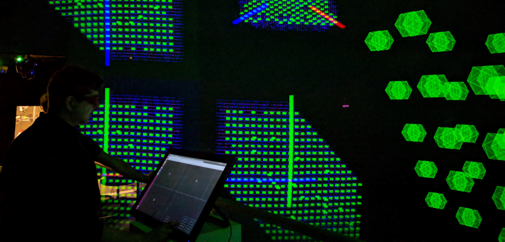

AlloSphere Research Group

"The AlloSphere includes a three-story cube that has been insulated extensively with sound-absorbing material, making it one of the largest echo-less chambers in the world. Within the chamber are two hemispheres of 5 meter radii, made of perforated aluminum. These are opaque and acoustically transparent." (wikipedia)
I've been working at AlloSphere Research Group from 2015 to 2018. I was involved in projects such as TEM/AP Visualization, but mostly I worked as framework developer on AlloSystem and allolib, which were used as backend of those projects.
AlloSystem is a C++ framework providing similar but different functionalities when compared to OpenFrameworks or Cinder. AlloSystem has built-in spherical projection support that can greatly faciliate creating content for the AlloSphere. Allolib is a fork of AlloSystem recently initiated, integrating higer version of OpenGL, cleaning up build system with support for Visual Studio, ImGUI integration, and etc. TEM/AP project
TEM/AP project

(WIP) material science simulation data visualization